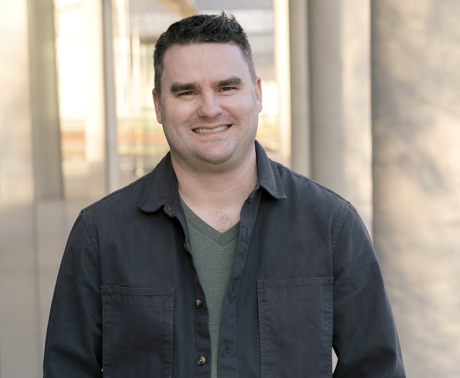

This is a paragraph. I am so awesome at coding! Here are some bullet points.
- I am 36 years old
- I love movies
- I love to make prints.
Here is a print that I made in 2024.

"Site LX," Lithography, monotype, and paper lithography, 15" x 22.5", 2024
Me
About me
Seth Daulton is a Texan artist who makes prints and drawings. Seth believes in the power of travel and the enjoyment, fear and excitement when one is suddenly immersed in a place that is entirely unknown to them.In the summer of 2013, Seth made work abroad in Venice, Italy. In addition to his residence in the lagoon city, he explored famous Italian art, artifacts, and architecture across the country. Discoveries uncovered in these locations along with those uncovered in his immediate surroundings and past influence his studio practice. His passion for globe trekking was solidified with a move from a suburban Dallas neighborhood to Aberdeen, Scotland as an adolescent. Seth holds an MFA in Printmaking from Indiana University and BFA in Graphic Design from Baylor University.
Seth is represented by the Nicole Longnecker Gallery in Houston, TX. Additionally, he shows his work on a national and international level. Recent exhibitions include "Teachable Moment" at Stove Works (Chattanooga, TN), "Seth Daulton: Sites Revisited" at Georgetown City Hall (Georgetown, TX), "Seth Daulton: Sites" at Dillon Kyle Architects (Houston, TX), the "SGCI Members Traveling Exhibition", the "37th Bradley International Print and Drawing Exhibition" (Peoria, IL), "Our Indiana: MFA Selections" (Laramie, WY), "Seth Daulton, Linde Piper, and Harumi Shimazu" (Houston, TX), "PrintMatters Summer Invitational" (Houston, TX), "Edinboro National Printmaking Competition" (Edinboro, PA), "Terra Incognita" (Bloomington, IN), "Premio Acqui International Biennale of Engraving" (Aqui Terme, Itlay), "PrintMakers" in collaboration with PrintAustin 2014 (Georgetown, TX), "23rd Parkside National Print Exhibition" (Parkiside, WS), and the "Pacific States Biennale National Print Exhibition" (Hilo, HI).
Seth is currently working as Technical Assistant and Exhibitions Coordinator at Southwestern University in Georgetown, TX.